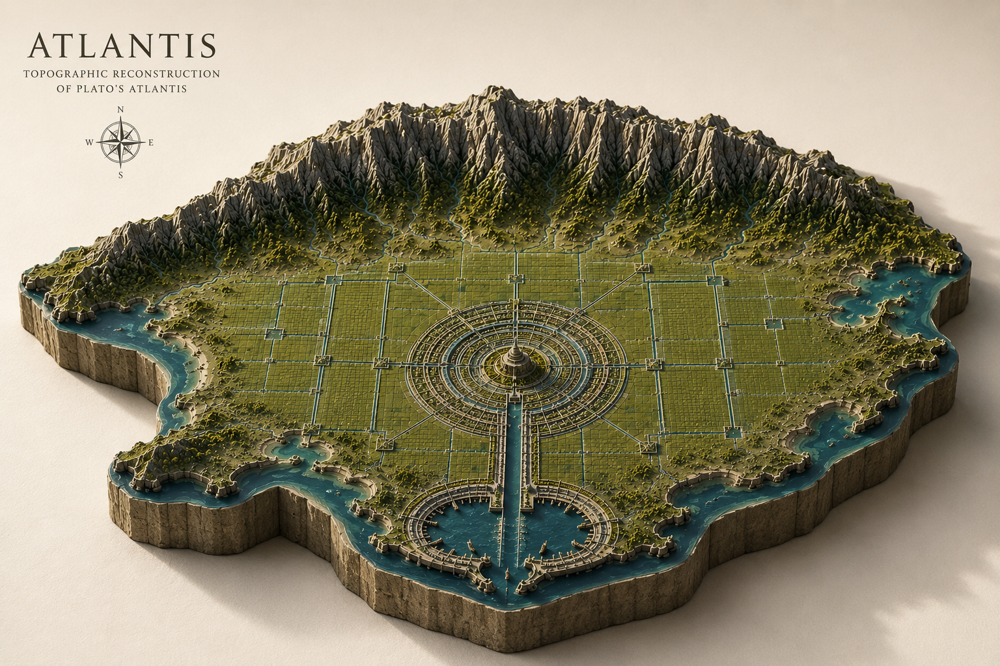

Topographic Reconstruction Survey

This survey presents a topographic reconstruction of Atlantis based on historical traditions, literary descriptions, mythological accounts, scholarly interpretations and cultural references associated with the lost civilization.
The objective of the Mythic Survey Society is not historical validation, but the cartographic visualization of legendary and fictional worlds through topographic relief mapping.